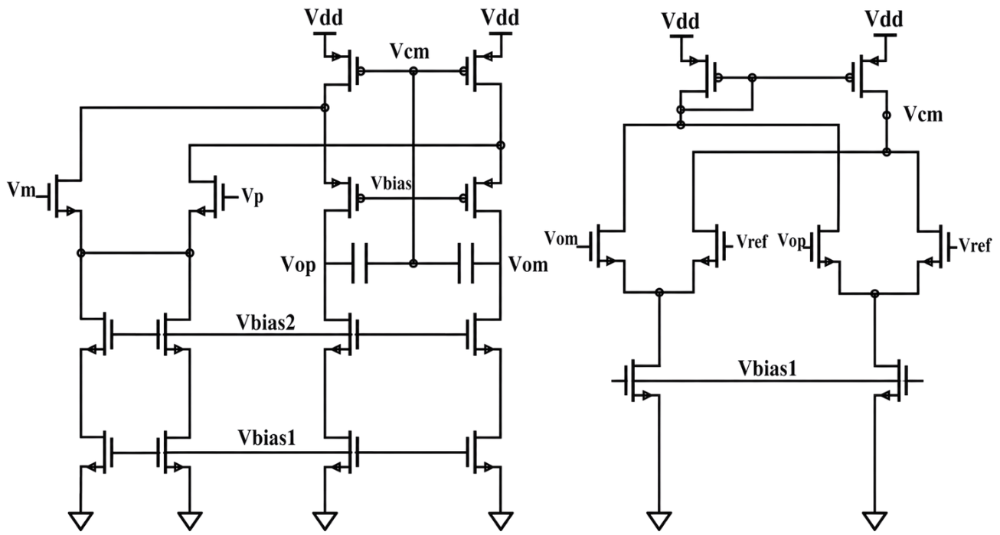
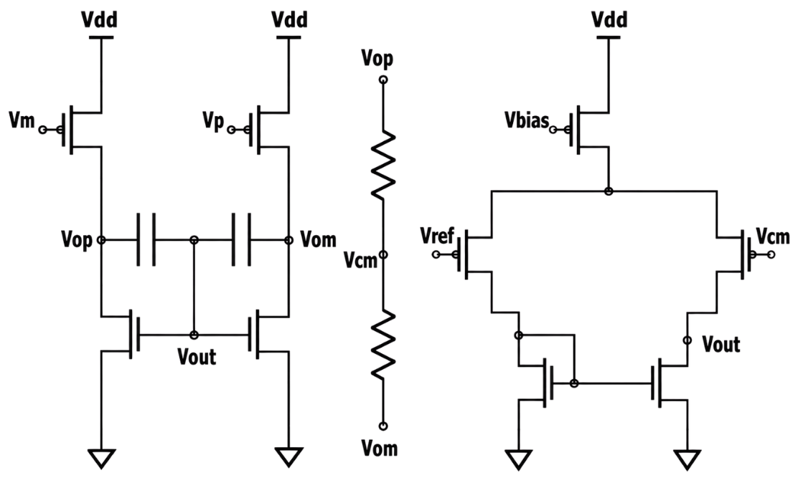
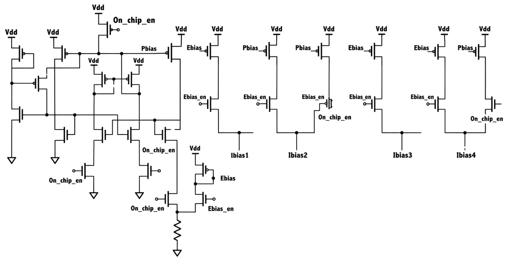

Amplifier performance
- 100 dB DC gain
- 2.3 MHz unity-gain bandwidth
- 52° phase margin
- 91 dB CMRR at 1 kHz
- 500 μW at 1.8 V, with 0.5 pF load
 LOHAN ATAPATTU
LOHAN ATAPATTUAnalog IC design · 2025
A fully differential op-amp designed for low-frequency filter applications in EEG acquisition systems.
RESEARCH SUMMARY
The amplifier is the core analog building block for the electrode-impedance signal path. A folded-cascode OTA provides the first gain stage; a fully differential common-source stage adds gain and drive. Each stage has its own common-mode feedback loop, while Miller compensation supports stability across the cascaded stages.
An on-chip beta-multiplier reference and startup circuit generate bias voltages. An external bias-current input supports characterization and bias adjustment.
POST-LAYOUT SIMULATION
Results below are simulations with parasitic-extracted layouts, not measurements from fabricated silicon.
The fully differential op-amp occupies 0.04 mm² in the SKY130 layout. It was submitted to the Tiny Tapeout ttsky25a shuttle. The paper evaluates the SKY130 op-amp and filter post-layout; silicon characterization remains future work.

AMPLIFIER SUBCIRCUITS
Selected schematic figures from the ICM 2026 paper show the folded-cascode input stage, second-stage gain circuit, and bias distribution.



DESIGN MATERIALS
The report documents the circuit architecture and the completed physical layout.